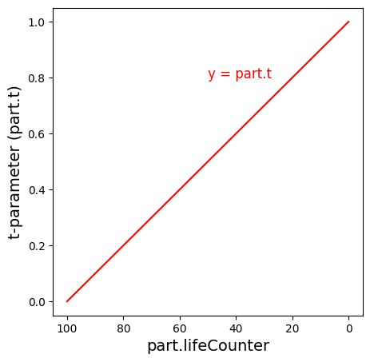

Up to this point, we have implemented some effects that were visually impressive eye candy, but were otherwise ambient and didn’t have much influence on the world around them. Starting from this chapter, we will be implementing particles that exhibit complex, dynamic behavior and can have tangible effects on the game itself, beyond just the graphical qualities they provide. Particles, which can be characterized by reactivity and/or interactivity (with Lara, other entities, the room geometry or the game engine / TRNG itself). This is made possible thanks to update functions, which allow to define the collective behavior a group of particles will exhibit. This mechanism permits the particles to act in a user-defined way and have unique, scriptable attributes (such as colliding with the environment, setting Lara on fire, doing damage on contact with an enemy, homing onto a target, etc).
More than anything else, it is this ability to code custom behavior which sets apart the particles offered by this plugin from the particles you have seen before, in FLEP or the vanilla engine. The incredible flexibility provided by update functions in tandem with the various helpful API functions allows one to script things ranging from new traps, new weapons and attacks for both Lara and her foes, magical abilities, unique puzzles, never seen before gameplay mechanics, the list goes on. This feature is very powerful, but as we all know, “with great power comes great responsibility”. It can easily lead to some disastrous results (including but not limited to: crashing the game) if you are not being cautious, so tread carefully!
In the first section of this new chapter, we will return to the previously neglected update function of the dust effect back from Chapter 1. This time around, I’ll give a proper explanation of update functions and how to write a simple one that makes the particles animate over their sprites. Afterwards, we will learn of the t-parameter property of particles, which allows to correlate a particle’s age with another property through some mathematical formula. A specific example of this will be given in the section on shaping particle trajectories. We will subsequently utilize the t-parameter in context of explaining how the sizeCust and colCust override fields work.
Similarly to Chapter 1, this chapter is also split into two halves for convenience, otherwise it would make for a very long and tough slog to get through.
Back in Chapter 1, when we created our dust particle effect, we started writing an update function for it. However, we quickly abandoned it when it became apparent that we won’t need it for our relatively simple dust effect.
Don’t worry, we will be bringing that poor little update function back from oblivion now! Let’s recall the entire dust.lua module script, including the (commented out) dustUpdate() function:
local dustgroup
local function dustInit()
local part = createSpritePart(dustgroup) -- create a sprite particle of the "dust" group
part.emitterIndex = getTombIndex(12) -- get tomb4 item index of item with NG index 12
part.lifeSpan = 30 * 4 -- 30 frames * 4 = 4 seconds
part.sizeStart = randomInt(150, 300)
part.sizeEnd = part.sizeStart * 3 -- make dust slowly expand over time
part.spriteIndex = 0 -- "smoke" sprite texture
part.fadeIn = 30 -- fade in for 1 second
part.fadeOut = 30 -- fade out for 1 second
-- randomize rot and rotVel
local degrees = randomInt(0, 359)
part.rot = degToRad(degrees)
local rotspeed = randomNegate(randomFloat(2, 4)) -- generate a random value between 2 and 4, negate it half of the time
part.rotVel = degToRad(rotspeed)
end
--[[
local function dustUpdate(part)
end
--]]
-- creation of our particle group and assigning it to the variable
dustgroup = createGroup(dustInit, nil) -- passing nil in place of our dustUpdate
Recovering the update function
First of all, we’ll uncomment the dustUpdate() function. We can do this either by removing the multiline comment tags or adding an extra minus / hyphen to the opening tag, ---[[ . Both ways are acceptable, but I’ll opt to simply remove the comment tags altogether. The next step is to restore dustUpdate as the second argument to createGroup(), in place of the nil value we put before:
local function dustUpdate(part)
end
-- creation of our particle group and assigning it to the variable
dustgroup = createGroup(dustInit, dustUpdate) -- restored dustUpdate as second argument
By the way, I feel like I should explain why I generally write the parentheses after the name of a function, e.g. dustUpdate(), but specifically when speaking of passing the function as an argument to a function like createGroup(), I drop the parentheses, i.e. dustUpdate.
This inconsistency is not by mistake or due to negligence. When I write the name of a function generally, I add the parentheses to emphasize it being a function (and not an ordinary variable with a value like 5). However, when I talk of passing a function as an argument to another function, I deliberately omit the parentheses after the name. This is because attempting to pass the function with parentheses to its name, like for example:
dustgroup = createGroup(dustInit(), dustUpdate() ) -- this is incorrect!
is improper syntax in Lua. In the above snippet, we are no longer passing the dustInit() and dustUpdate() functions as arguments, but rather calling each function without any arguments, then passing the values returned by these functions (or rather lack thereof, since neither should return anything) as the actual arguments passed to createGroup(). If the functions were to return something, like a number, we would be passing that returned number as an argument to createGroup() (and since this is not what createGroup() is expecting to receive as arguments, the plugin would throw an ERROR). However, if the functions do not return anything (as is in our case), it is the same as passing nil instead of the function. Effectively, the createGroup() call turns into createGroup(nil, nil). This results in the same problem we had by not respecting the correct order of the code back in Chapter 1, if you recall – a group with no init and no update function assigned.
If the reason for dropping the parentheses is still not clear to you, it may help to consider another perspective. Remember when I said that function names are actually just disguised variables? This means that the variable is storing a value. What value would that be? The definition of some function (this is an oversimplification, but assume that’s what you get when you ask for a function variable’s “value”). When we want to pass a Lua function as an argument, we want to pass its value (the definition), and not its result, so we are treating it as we would any other variable that holds a value. To pass to an argument the value from a variable, we never used parentheses, right? For the logic of no parentheses to be consistent, we are thinking of dustInit and dustUpdate not as functions, but as variables.
To emphasize the difference between calling functions and passing them as arguments, I will omit the parentheses to indicate that a function will not be called, but rather passed as an argument to another function (i.e. treated as a variable with a value). In all other cases, I’ll refer to the function with parentheses attached to its name, emphasizing that it is, indeed, a function.
Coming back to our group definition, we are now constructing our group with both an init and an update function. Of course, our update function is not doing anything at the moment. We will make it do something soon, don’t worry, but before we can proceed, we should first be capable of answer the following – what are update functions, exactly, and how do they work?
I already mentioned before that the update function expects a single argument, a particle instance from the group. The function argument’s name becomes an alias for the particle instance it is currently working on. We can choose whatever alias we want, really, but in these tutorials, we always use the name part, as per our convention.
But wait, – you might ask – doesn’t that go against the rule of not using an identical name for another variable in the script? After all, we’ve already used part as the name for the newly created particle instance in the dustInit() function…
Fret not, in this case it doesn’t matter the names are identical. The reason why it’s okay to used the name part in both the dustInit() and dustUpdate() functions is because these are, in fact, two unrelated variables. Both are enclosed within the code blocks of their respective functions (one being the init, the other being the update function). They are not in an outer scope of the script, like the dustgroup variable, for example. If we were to use the part name somewhere in the outer scope, outside of all functions, if blocks and for loops, then reuse the name a second time inside the init or update function, then indeed we would be dealing with a name collision and could run into potential problems of ambiguity.
But in our case, the part variables are occupying two different locations in the code and Lua is smart enough to recognize that these are not the same, but completely distinct variables, that just happen to use the same name in their respective scopes (one scope is the init function block, the other scope is the update function block). If you want to be extra careful though, you may of course use a different name for the part alias in the update function. Just use another short one for your own sake, unless you love typing a lot.
Particle System Update Loop
Anyway, what purpose does the argument part serve to dustUpdate()? Simply put, part is one of the particle instances belonging to the particle group. During each in-game frame, the particle system iterates through all currently active (alive) particles. It performs generic updates to each of those particles (like updating their positions or decreasing their life counters). On top of that, it calls the update Lua functions we assigned to particle groups (unless nil was used in their place, that is), dispatching all the particle instances belonging to a certain group to the corresponding update function, through the part argument (serving as the alias of the given particle instance inside the update function). This is the Particle System Update Loop:
Given that update is called for every active particle in the group, part becomes the alias of the specific particle instance on which the update function was currently called (as the plugin moves through the sequence of all exisiting particles in the current cycle of the game loop). This way, every particle in the group has the opportunity to be modified by the designated update function assigned to the group, on each game cycle. In our update function, through the part alias, we have access to the particle’s properties, including all of the properties we have talked about so far, and a few we have not mentioned yet. We can then inspect or change the particles’ positions, velocities, rotations, sizes, colors, so on and so forth, to our own will and liking!
Okay, enough of the exposition, already. Time to make the update function actually do something with our particles!
How about this – for testing purposes, on each successive tick, we make the particles jump to the next sprite texture in DEFAULT_SPRITES. They will start out with part.spriteIndex = 0 in the init function, then keep iterating through the different textures from DEFAULT_SPRITES in the update. Sounds simple enough, right?
The update function for that may look something like this:
local function dustUpdate(part)
part.spriteIndex = part.spriteIndex + 1
end
Nothing too sophisticated, as you see. We are taking the current value of part.spriteIndex, adding 1 and assigning this new value back to spriteIndex. Easy, right?
Let’s run the game and see what we have. We launch the level and…
Indeed, all of the particles animate through the sprite textures, but only once, then they stop at the last texture of DEFAULT_SPRITES! Not only that, but if we enable the console logger to see what’s going on behind the scenes, we see we’re being bombarded with WARN messages:
Don’t worry, we can fix this. We have just blundered with the above code for increasing the part.spriteIndex, that’s all. To understand why this doesn’t work correctly, let’s inspect the DEFAULT_SPRITES object in either WadTool, WADMerger’s sprite editor or the Sprite Tool in NG Center (on the first Tools tab). If you are using an unmodified DEFAULT_SPRITES, we can see that there are 33 textures contained inside of it, indexed 0 to 32.
The particles first are assigned texture 0, as we indicated in the init function (part.spriteIndex = 0). The update function makes part.spriteIndex move to texture 1, then 2, then 3… if we continue this pattern, we eventually reach the last texture at index 32. What happens during the update at that point? The part.spriteIndex should increase to 33, but… there is no texture with that index number in the DEFAULT_SPRITES! This situation, if left unmanaged, would result in a nasty crash, since the Tomb4 engine would not know how to handle it. However, as we have just seen, instead of crashing the game, the particles simply stop updating their texture upon reaching the final one.
Why is there no crash, then? This is a protective measure within the plugin. To ensure that such a nasty crash never occurs, if the part.spriteIndex goes beyond the number of existing sprite textures, the plugin sets it back to the highest possible texture index in the sprite slot (32 in this case) and sends a warning message in the logger. Consider this a kind gesture from the plugin developers… ;)
But you probably don’t want the particle to animate only a single time and then stop, it would be better if this animation would repeat over and over again!
Since the number of textures in (unmodified) DEFAULT_SPRITES is 33 and we want the update function to keep going through all the indices 0-32 in a loop, but never go above 32, there is a specific arithmetic operator that solves this exact problem. Do you remember which one? I hope you had the modulo operator % in mind. If you did not, then… nothing, just remember it is very convenient for these types of situations!
We will use the total number of sprite textures in DEFAULT_SPRITES (by default, 33) as the modulo, on the incremented spriteIndex. This will make the spriteIndex continuously cycle between integers 0-32, exactly what we want. We first need to put the expression part.spriteIndex + 1 in parentheses. According to the PEMDAS rule, when an operation is inside parentheses, that calculation is performed first. We do this because we want to ensure addition is done before the modulo operation, otherwise the order would be part.spriteIndex + (1 % 33), which is not what we want. After the closing parenthesis we place the modulo operator % with 33 on the righthand side:
local function dustUpdate(part)
part.spriteIndex = (part.spriteIndex + 1) % 33
end
Let’s try running it in game again.
Problem averted! Though the aesthetic quality of such particles is… questionable, we see they loop flawlessly through all of the textures in DEFAULT_SPRITES.
You can certainly use this approach to make particles animate through a looping sprite sequence (and not a bunch of unrelated sprites as in our example). However, in the second half of this chapter, I’ll demonstrate a function named partAnimate() which does this for us and allows to set both the exact texture range and the framerate for this animation. Way more convenient than doing it ourselves!
As you know by now, a particle has two distinct life properties. The first one, part.lifeSpan, as the name implies, describes the total amount of life the particle has. The other life property, part.lifeCounter, counts down the remaining life of the particle. In the init function, it’s implicitly assigned the same value as for part.lifeSpan, but afterwards is automatically decreased by 1 on each game cycle. Once part.lifeCounter reaches 0, the particle dies and is no longer updated or drawn by the particle system.
Let’s ponder for a moment about the following. Assume we wanted to have a general way to describe a particle’s “life-stage”, regardless of its actual lifeCounter value. Something like a percentage of elapsed life. How could we do that?
Instead of using the particle’s part.lifeCounter value, which is an integer in the range [0, part.lifeSpan], we can picture a decimal (float) value between 0.0 and 1.0 (equivalent to a percentage between 0% and 100%). At 0, the particle has been newly born into the world. At 1 (100%), the particle reached the end of its life and ceases to exist. All in-between values describe the decimal fraction of how far a given particle is into its life course, regardless of the actual lifeSpan and lifeCounter for the given particle instance. For example, a value of 0.5 would mean that the particle is halfway through its existence (perhaps experiencing a mid-life crisis, because of it).
Jokes aside, if we have the lifeSpan and lifeCounter values, how do we calculate this “current lifestage” percentage value? It’s actually a pretty simple calculation of the form:
local lifestage = (part.lifeSpan - part.lifeCounter) / part.lifeSpan
We just subtract part.lifeCounter from total part.lifeSpan and divide the result by part.lifeSpan again. This value will always be somewhere between 0 and 1, regardless of how big or small lifeCounter and lifeSpan really are (that is, unless you tampered with the part.lifeSpan and/or part.lifeCounter values outside of init, which as yet another reminder, you should never do).
Fortunately, we don’t have to carry out this calculation ourselves every time we want to use this life-percentage value for some purpose. Particles provide a special read-only property called the t-parameter, with the field name part.t (that is, a single lowercase t), which gives the 0 to 1 lifestage fraction value readily for the particle:
part.t -- read-only property, gives a 0 - 1 normalized age for the part
As mentioned, this property is read-only, which means that you can only read (copy) its current value. You cannot assign custom values to it, that results in an ERROR.
Okay, that’s great and all, but what would this t-parameter even be useful for? Well, picture the following situation. You would like another particle property, like its size, color or velocity, to depend on this “lifestage” value in some way. It’s always in the known range of 0.0 to 1.0 (unlike part.lifeCounter values, which are integers and aren’t always uniform form one particle to the next, due to various life spans). The t-parameter grows linearly with time (while lifeCounter values go down), reflecting the particle “progressing” its life-span. If you’re more of a visual learner, here is a graph of the t-parameter values, plotted against lifeCounter values of a particle with lifeSpan set to 100.

Importantly, the actual lifeSpan and lifeCounter is irrelevant here, the part.t value always moves up from 0 towards 1 (it acts like a percentage, relative to lifeSpan). Therefore, by applying some simple mathematics, you can come up with a formula that translates the 0.0 to 1.0 value of part.t to a value usable for the size, color or velocity.
You may interject that for velocity, we already have a way to change it without using an update function – by setting an acceleration on the particle. And I say to that: okay, but what if we want the particle moving in a circular orbit? This involves a continuous change in acceleration (along with velocity and position) over time. For such cases, we can’t rely on just setting the part.accel vector a single time (in the init function) and be done with it. A circular orbit implies continuous adjustment of velocity and/or acceleration per each tick, forcing us to use an update function, there’s no way around it.
Here’s where the t-parameter can shine – since its value is guaranteed to be between [0, 1] and increases at a constant, linear rate, as the particle ages, we can create an expression that makes the velocity depend on this t-parameter in some way.
Maybe you still don’t see the full picture of how this can be useful for particle effects. Well, let’s see an example in the next section!
We will now entertain a scenario in which we want the particle velocity to depend on the particle t-parameter in some way. The specifics of it are entirely up to us. We can come up with any formula that can be expressed in mathematical terms, which Lua is able understand. In doing so, we’ll utilize what we know of the t-parameter. Considering it always goes from 0 to 1 for each and every particle, we can perform mathematical operations on the value given by part.t to end up with a velocity that corresponds to the current life-stage of the particle.
I will now ask you to reach back to your maths education in school. You most likely encountered a thing called trigonometry, do you remember? It is a discipline of maths studying how the size of angles in triangles relates to the lengths of triangles’ sides. There are two “main stars” that almost always show up when talking about trigonometry:
the sine function – sin()
the cosine function – cos()
These function take the value of some angle, and spit out a particular number from -1 to 1, based on the given angle value.
If we consider a right-angled triangle (triangle with one of its angles equal to 90°), the sine function describes the length ratio of the opposite side to the hypotenuse side. The cosine function describes the ratio of the adjacent side to the hypotenuse. There is also the tangent function – tan(), describing the ratio of the opposite to the adjacent:
Per the above image, the angle the trigonometric functions are referencing is denoted with the lowercase greek letter θ (theta). Most commonly, the angle value of θ is expressed in radians (as a reminder, with radians, everything is based around the number π, with π/2 representing 90 degrees, π representing 180 degrees and 2π representing a full 360 degree turn). The sin() and cos() functions are continuous (without any gaps or abrupt changes) and periodic (repeating). Their specific shape repeats with an interval of 2π radians (360 degrees) and they smoothly oscillate between the output values of -1 to 1, then from 1 to -1, then back again, over and over.
Both graphs have a very characteristic repeating wave-like shape. The various output values of the functions will re-occur at intervals of 2π (360°), so whatever value you would get at some input angle x, you will also get at angles x-2π, x+2π, x+4π, x+6π, etc. The function graphs look mostly identical, the difference is that the y = cos(x) graph is slightly shifted in regards to the y = sin(x) graph, since the peaks and valleys do not line up with each other (cos() is phase shifted by π/2 compared to sin(), i.e. cos(x) = sin(x + π/2)). This shifting has an very interesting consequence for how these functions cooperate with each other, but I will leave that for later. One implication of this is that the graph for sin(0) starts at the output value y = 0, whereas for cos(0) it starts at y = 1. Apart from those distinctions, the functions are very similar in how they behave, having both the same amplitude and frequency of their waving. We can take advantage of these characteristics to make particles move in “squiggles” or “waves”, for instance.
Waving particles
To achieve an undulating “wave” of particles, we can give particles a Y velocity coming as an output from the sine (or cosine) function, given a certain input for the function. What should this input be? Well, the sin(x) function takes a single argument, x, which is some number value (e.g. like that of an angle). In reality, we can use any number value we want, even one that is derived from particles themselves. An obvious one worth considering in this case is part.t, of course. We will use the value of part.t as an input argument for sin(x), paired with a constant (unchanging) velocity for the other two axes, X and Z. This sounds a lot scarier than it actually is, you’ll see it’s quite simple in the code.
Because the Y velocity will change over time (in a complex way, which part.accel cannot do justice), we must use an update function.
Given the below orangish-pink dot particles with a part.lifeSpan of 240 (8 seconds):
local wave
local function waveInit()
local part = createSpritePart(wave)
part.emitterIndex = getTombIndex(3) -- spawn near moveable with NGLE ID 3
local dx = randomFloat(-512, 512)
local dy = randomFloat(-64, 64)
local dz = randomFloat(-64, 64)
part.pos.x = dx
part.pos.y = dy
part.pos.z = dz
end
local function waveUpdate(part)
end
wave = createGroup(waveInit, waveUpdate)
we’ll come up with an update function which modifies the Y velocity component using the sine function. We use part.t inside the sin() function, as so:
local function waveUpdate(part)
part.vel.y = sin(part.t) -- velocity derived from the sin() function applied to part.t
part.vel.z = -20 -- constant Z velocity -- part.vel.x defaulted to 0 from the particle init
end
As you see, in the waveUpdate() function we’re setting a Y velocity via the formula -sin(part.t) and for the Z velocity we set the constant value -20.
We give it a run in game, and uhh…
Our particles aren’t really waving, moreso they’re moving in a rather straight line. Recall that the raw value of part.t goes from 0 to 1, directly increasing with the particle’s age. Perhaps the problem is that such a value range is simply too small for the wavy nature of sin() to become apparent? We should make it larger, in that case.
Since these trigonometric functions anticipate input values in “radian scale”, a good start would be to multiply part.t by 2π, a single interval (“wave”) of the sine function. This moves the value range of part.t from [0, 1] to [0, 2π]. By doing so, the particles should at least be able to complete a single “wave” of the sin() function. For convenience, we will make use of the built-in constant, PI_TWO (we could also use 2 * PI instead).
We’ll make the following modification for calculating the Y velocity in the waveUpdate():
part.vel.y = sin(part.t * PI_TWO)
Well… still no evident waving. Let’s remind ourselves that sin() and cos() functions return values in the [-1, 1] range, making the resulting Y velocity oscillations very insignificant. This “flattens” the shape and makes it seem almost like a straight line. Let’s turn it up a notch by multiplying the returned result by 20-30 (or something in that ballpark).
part.vel.y = sin(part.t * PI_TWO) * 20
Okay, at least now we’re able to see clear evidence of curving into a wave-like shape! But yet, there’s something off about the shape the particles trace out…
Assuming that we are looking at the traced curve as if it started out at the origin point (0, 0) on the graphs above, you may notice the shape of the curve does not match up with the graph we’d expect for sin(x), despite us using the sin() function. Come to think of it, it seems to match more closely with the cos(x) graph! No, I didn’t get the functions mixed up with one another by accident, the math is definitely correct. Something different is at play here.
The first thing we must observe is that in the TR engine, the order for the Y axis is inverted. As it goes to lower and more negative values, you go higher up in the level map (and vice-versa). That’s an easy thing to fix, we just need add a minus in front of the call to sin(), in order to negate the overall output:
part.vel.y = -sin(part.t * PI_TWO) * 20 -- Y axis is inverted so use the negative
However, this simply flips the curve upside-down (the valley becomes a peak), it does not entirely fix the shape.
The other reason why it does not match up with the sin(x) graph is because we are modifying the velocity (rate of change to position) of the particles, rather than position of the particle directly. Whenever we do this, we cannot simply reuse the formula we’d use normally for position, because in the majority of cases, applying it to velocity results in something vastly different. The reasoning behind it is a mathematical concept known as calculus. This is a more advanced mathematical topic that will be touched on eventually, for more complex velocity formulas. I will not bother you with it right now though, all you need to know is because we are modifying the velocity, instead of position, we must actually use the -cos(t) function, instead of -sin(t) (although it seems arbitrary, there is concrete reasoning behind this transformation, although it requires its own, dedicated explanation, which is quite math-heavy and not our main focus). The expression for velocity should thus be changed to:
part.vel.y = -cos(part.t * PI_TWO) * 20
Fantastic, we finally have a nice wave of particles, following the shape of the sin(x) graph. One, single interval is a bit boring, though, so let’s squeeze in more of them in the particle “graph”. Instead of multiplying part.t by 2π, we multiply it by something bigger, like 6π (3 * PI_TWO or alternatively, 6 * PI), which should result in 3 complete intervals during each particle’s life:
part.vel.y = -cos(part.t * 3 * PI_TWO) * 30
Ah, fabulous!
Animating the wave through time
What if we go a step further and make the wave shape animate over time? It's not that hard to achieve, we just need to add a universal time component into the expression. And by time component, I mean getGameTick() – you remember it, right?
We need to somehow add this tick value to the part.t value already inside the cos() function. Unfortunately, the raw game tick value will increase way too fast to achieve a nice effect. We can first downscale it by a factor of, say, 0.002 and save this to a local time helper variable. Then add it to part.t within extra parentheses, to prioritize addition over multiplication. Finally, we multiply the whole thing by 6π, as before:
local time = getGameTick() * 0.002
part.vel.y = -cos((part.t + time) * 3 * PI_TWO) * 30
Voilà!
Helical trajectory
These waving particles are cool, but we can take it to the next level, by turning waves into helices or corkscrew shapes! Recall again the properties of sin() and cos(). I mentioned that these functions are phase-shifted in regards to each other. More specifically, sin(x) is π/2 radians “delayed” behind cos(x), thus cos(x) = sin(x + π/2). This phase-shift actually has a very neat origin / reason behind it. Take a look at the animated diagram below:
Allow me to explain what we’re looking at here. Let’s say we have an angle, which we will again call θ – the greek letter theta. What do we get when we use the pair of trigonometric functions, cos() and sin() on the angle θ? As it turns out, the outputs of these functions track the coordinates on the green unit circle of radius 1, centered at the origin point (0, 0). Specifically, cosθ tracks the X coordinate and sinθ tracks the Y coordinate. As the angle θ changes, cosθ (blue graph) shows how the X coordinate changes, while sinθ (red graph) shows how the Y coordinate changes on the unit circle. Observe that both of these function graphs have the same shape, but given the same input of θ, seem to be “delayed” with respect to one another. It is this specific “delayed” relationship between sin() and cos() functions that results in the (X, Y) coordinates tracing out a unit circle! Thus, each point p = (X, Y) lying on this unit circle is described by the below equations, as θ sweeps from 0 radians to 2π radians (i.e. 0° to 360°):
X = cos(theta) Y = sin(theta)
Now, we’ll step outside of the 2D mathematical graph and think in terms of our particles, which exist in 3D space. If we apply the values given by cos() to one velocity coordinate (e.g. X) and sin() to another coordinate (e.g. Y), while keeping the velocity for the third corrdinate (e.g. Z) constant, we should get the particles to travel in a spring-like helical path!
Although seems vaguely similar to something in the Chapter 1 Bonus Section (if you read it), the way we will be approaching it here is conceptually very different. The particles in Chapter 1 used no update function, they were simply spawned at a circular offset, changing over time, but each individual particle was assigned a constant initial velocity. This gave an illusion of a twisting helix or spring, even though all the particles were following a straight path! The particles we’ll be making in this section will not be moving in a straight line, but will travel along the curved helical path by themselves. However, this requires us to constantly update the particle velocities on each frame, hence we needed to wait until we learned about how update functions work to pull this off.
Well, what are we waiting for, let’s give it a shot! We’ll try making a helix with some green, glowing particles:
local greenHelix
local function greenHelixInit()
local part = createSpritePart(greenHelix)
Our goal is to modify the part.vel.x and part.vel.y of the particle in a way that makes it curve around in a circular trajectory, while keeping part.vel.z fixed to a constant value (same as we did with the wave). We will take the value of part.t and scale it to make it align with the intervals of the sine and cosine functions (remembering that 0 to 2π covers a single interval). Because we are again modifying velocity and not position, we will actually use -sin() for computing the X velocity component and -cos() for the Y velocity component (this is once more due to the rules of calculus, but I will spare you the details for now). Let’s take a glance and the code below:
local function greenHelixUpdate(part)
local coils = 5 -- number of full turns
local radVel = 40 -- curling velocity of helix
local t = part.t * coils * PI_TWO -- part.t scaled by coils and 2π
We have created some helper variables, namely coils, radVel and t. The coils variable determines how many coils (full turns) of the helix we want. The radVel determines the strength of the curling motion on the X and Y axes. Finally, t is part.t multiplied by coils and 2π. Thanks to these variables, we are able to easily change some characteristics of the helix the particles will travel along (e.g. change the radius of the helix, change the number of coils/twists, etc). Here is how it turned out:
Not bad, if you ask me!
We can also do some neat tricks to further shape the helix in fun ways. As an example, we will transform part.t, giving rise to a parabolic curve given by the equation y = -4t(t-1) (contrasted with the unmodified value of y = t):
The parabola is 0 at t = 0 and t = 1 and reaches a peak of 1 at t = 0.5. We translate this computation to Lua, with part.t taking the place of t, and save the result to an extra variable shape:
local shape = -4 * part.t * (part.t - 1) -- shaping part.t into a parabola with peak at 0.5
Then we use shape as one additional term in the velocity computation for X and Y:
This should give us a helix that gets fatter in the middle and slims out at both “ends”, following the shape of the parabola:
By using this general approach of controlling velocity via part.t, you can create many more intricate curves that the particles will follow. In the repository of module templates, there is an example (trefoil.lua) for a colorful trefoil knot curve:
Okay, I’m nerding out now and I should stop. Hopefully, the idea of shaping particle trajectories by using part.t and various mathematical formulas around it is comprehensible to you, at least in principle. You just need to know what mathematical calculations to apply to part.t to get your desired shape, which depending on your expertise in maths, can get tricky. For now though, we will leave behind the topic of mathematically driven particle motion, as fascinating as it is. If it’s something that you want to pursue further, a more thorough deep-dive into this subject will come in one of the later chapters.
When it comes to the particle size and color properties, there are respective _Start, _End and _Cust variants for them. All the way back in Chapter 1, when we learned about about these properties in context of init functions, I said that only the _Start and _End variants are important in init, while the _Cust variants are only useful in update functions. Since update functions are now our topic of interest, it’s time to cover the _Cust variants as well.
_Start and _End property variants (for size and color) are used in init functions to indicate the initial and final values (respectively) of a particle property. The particle’s current size (we can refer to it as “part.sizeNow”, but of course this field doesn’t actually exist!) would be somewhere between part.sizeStart and part.sizeEnd, depending on the age of the particle. Curiously, the t-parameter of a particle (in the 0 to 1 range) also comes into play here, behind the scenes. It’s involved in determining the current size from the Start and End values. The formula for it, carried out inside the plugin, resembles something like this:
Side note: the general formula that looks like this:
c = a * (1 - t) + b * t
where a and b are arbitrary values to be blended together, and t is between 0 and 1, is known as a linear interpolation, or a lerp. I am bringing your attention to it, because it’s very useful and we will be using it quite often later on, in the form of the API function lerp().
This idea of linear interpolation also applies to how part.colStart and part.colEnd behave. The current color of the particle is linearly blended (separately for each color channel) between these two colors, depending on how old the particle is (also factoring in the part.colFadeTime property, if it was set to a non-default value).
What are the _Cust fields for, then? If we do not make any assigments to them, they simply carry the current blended values of the properties they represent (the ficticious “part.sizeNow” and “part.colNow”). However, when you assign some value, e.g. a size to the particle’s part.sizeCust field or a color to the part.colCust field, this will result in overriding the blended size (or color), for a single frame.
Importantly, this overriding of the _Cust value is valid for a duration of only one frame. The particle system will reset the size (or color) with the re-calculated blended value for the next frame again. This is why assigning to these _Cust variants in init functions serves no purpose, as we need to override the blended values from the particle system on every frame to see the result. Fortunately, this job can be perfectly accomplished by the update function, since its very purpose is to change particle properties on every single frame.
Modifying sizeCust
You can combine the knowledge regarding the t-parameter and part.sizeCust to make the size of a particle change dynamically, depending on the part.t value. For example, making the particle repeatedly grow and shrink with our beloved sin() function.
Dealing with part.sizeCust is rather straightforward, you just assign the size values, provided by your custom formula, in the update function. Below is a simple example:
local function sizeUpdate(part)
local cycles = 10 -- var for determining number of grow/shrink cycles
local t = part.t * PI_TWO * cycles -- pre-multiply the t-parameter and save it in a var
part.sizeCust = sin(t) * 100 + 150 -- oscillate size between 50 and 250
end
We first create a helper variable cycles, which counts how many grow/shrink cycles the particle is meant to do over its lifespan. Then, we’re taking part.t, multiplying it by PI_TWO and cycles, and saving it to local t. We then take the rescaled t value and pass it into sin(). The result of sin(t) is then multiplied by 100. This should result in value between [-100, 100]. Obviously, particles cannot have negative size value though, so as a final correction, we add 150 on top, shifting the oscillation range from [-100, 100] to [50, 250]. We assign this final result to part.sizeCust. This should result in the particles smoothly oscillating in size, in approximately 10 cycles, between 50 and 250.
Side note: what would the difference be if we used the value of getGameTick() instead of part.t as the input for sin()? Well, since the game tick is a uniform value, not unique to each particle like part.t, all the particles would be synchronized, growing / shrinking simultaneously. Conversely, part.t represents the individual age of each particle, so they will grow and shrink independently of each other. Certainly, we could have used getGameTick() to get a different result, it depends on what we’re going for.
We needed to mathematically transform the raw output of sin(t), to get values that do not dive into negative numbers and at the same time are in a sensible range, to take a noticeable effect on part.sizeCust. This formula ended up being sin(t) * 100 + 150, which is not too complicated. However, figuring out the correct math each time to obtain a desired min/max range feels cumbersome. Is there an easier way? Yes!
The remap() function
When it comes to moving a value from one range to another, like we just witnessed in the last example:
scaling part.t from [0, 1] to [0, 20π];
moving the output range of sin(t) from [-1, 1] over to [50, 250]
there comes a very handy little function from the API, called remap(). It requires 5 arguments in total:
remap(x, oldMin, oldMax, newMin, newMax) -- remaps argument "x" from [oldMin, oldMax] to [newMin, newMax]
To call this function, we must specify the x value which will be remapped, the original min-max range of the x value with the pair oldMin, oldMax, then finally the new range, via newMin, newMax.
We can do two remappings. The first one, to scale part.t by 2π * cycles:
local t = remap(part.t, 0, 1, 0, PI_TWO * cycles) -- remap part.t from [0, 1] to [0, 2π * cycles]
and then the second one, take the output of sin(t) from [-1, 1] and remap it to [50, 250]:
part.sizeCust = remap(sin(t), -1, 1, 50, 250) -- remap sin(t) from [-1, 1] to [50, 250]
These remap function calls effectively will do the same thing as the mathematical calculations from before, but I think it simplifies obtaining the correct values quite a bit, because you do not need to think about the exact mathematical formula to get your expected result. The only caveat is knowing what the original range of the remapped x value is. As an example, for part.t it’s [0, 1], while for the outputs of trigonometric functions sin() and cos(), the range is [-1, 1]. These become the oldMin, oldMax values, which you are remapping to newMin, newMax.
The remap() function serves as an alternative to the previously mentioned functionclamp(). The difference is that clamping sets hard boundaries that the x values must fit into, whereas remapping attempts to make the x source value range smoothly fit into the [newMin, newMax] range (thus you must provide information about the [oldMin, oldMax] of the source value). Be aware that the remap() also clamps the x input to fit between [oldMin, oldMax]!
Modifying colCust
Changing particle size on the fly is really neat, but changing particle colors is even cooler! Similarly to the part.sizeCust field, part.colCust allows to override the RGB color values of a particle dynamically in the update function. I will show how we can modify part.colCust by using yet another great function from the API, createColorHSV().
HSV Color Space
The function createColorHSV() returs a ColorRGB object. Unlike the ordinary createColor() function, it does not take values for the Red, Green and Blue channels. Instead, it takes arguments of Hue, Saturation and Value, according to the HSV color model.
The HSV model works differently than the RGB color model. Instead of specifying the exact amounts of primary colors (Red, Green, Blue) that constitute the final color, in HSV, the color is represented as a combination of Hue, Saturation and Value.
Hue is an angle, expressed in degrees (miraculously, not radians!) between 0 and 360, representing a color wheel smoothly blending hues of red, orange, yellow, green, blue, magenta/purple and back to red again. Conventionally, Hue = 0 corresponds to red and begins the color wheel.
Saturation describes how saturated the color is. At Saturation 0, the color is either white, black or some shade of grey, with no identifiable hue (the Hue value does not matter now, since it has no influence at Saturation = 0). All values of Saturation above 0 have an identifiable hue. The full Saturation is at 1, which indicates no “greyness” in the color.
Value describes how dark or bright the color is. As with Saturation, the range of Value is between 0 and 1. At 0, the color is pitch black, RGB(0, 0, 0). Neither Hue nor Saturation influence the color at Value = 0. At Value = 1, the color has no “darkness”. What this means depends further on the Saturation value. At Saturation = 1 and Value = 1, the color is fully saturated. At Saturation = 0 and Value = 1, the color becomes fully white, RGB(255, 255, 255). At middle saturation (around 0.5) and Value = 1 the color becomes a pastel shade, more biased towards white. At full Saturation = 1 and a intermediate Value (around 0.5) the color becomes a darker shade, more biased towards black. No Saturation with an intermediate Value is some shade of gray.
This HSV model of colors has some interesting implications. The Hue value, seen as an angle from 0 to 360 degrees, represents a continuous loop through the color spectrum. This suggests that it should be possible to cycle through it seamlessly.
That’s exactly what we will be doing, in the following example involving part.colCust:
local function colorUpdate(part)
-- some code for particle motion can be here
local hue = getGameTick() -- game tick value is interpreted as angle for hue
local sat = 1.0
local val = 1.0
part.colCust = createColorHSV(hue, sat, val)
end
The particles will oscillate between different hues as the game tick counter increases.
They are oscillating uniformly, though, all at the same time, since game tick values are uniform for each particle. We can also obtain a “spectrum scrolling” effect by including part.t in the picture. We rework the formula for hue, first multiplying part.t by 180, then adding getGameTick() on top of that:
local hue = part.t * 180 + getGameTick() -- individual particle delay via part.t
By how much we multiply part.t, we control the difference between the starting hue and ending hue in the color scroll. You may also do without the getGameTick() value (making it entirely depend on part.t), or even use some other inputs for createColorHSV(). Have some fun with it and try out different combinations!
Modifying RGB values individually
In the above example, we were assigning colors directly to the field part.colCust as a whole. Nothing is preventing us from modifying the RGB color components of colCust individually, though. We can then control the value for each color channel with a separate formula. I just want to re-emphasize that the color fields accept only integers from the 0-255 range per each channel. Thus, we must clamp or remap whatever result we get, e.g. from a function like sin(), to [0, 255].
local function rgbUpdate(part)
-- some code for particle motion can be here
local t = part.t * 3 * PI
local d = PI * 2 / 3
local sinr = sin(t)
local sing = sin(t + d)
local sinb = sin(t + 2*d)
Fun stuff! Feel free to play around and see what curious color patterns you can come up with by using this technique.
As this chapter is quite long already, I’ve decided to split it in half here, since this is a good point to pause. The next half continues with topics such as particle function and particles that spawn other particles. That’s where update functions can really shine and show their true power! Take a break if you need one and I’ll see you there!


 Voilà!
Voilà!